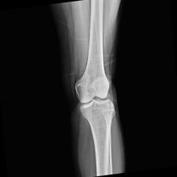
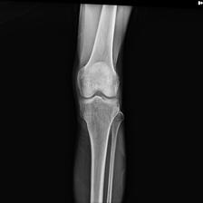
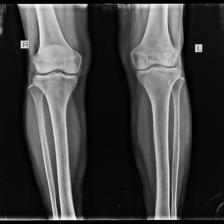
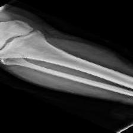
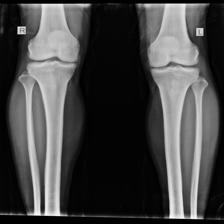
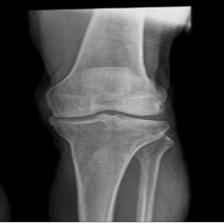

Note: The inference is running directly in your browser using WebAssembly.
Knee Osteoarthritis Classifier
Select an X-ray image to assess bone density condition

Ground Truth: Normal

Ground Truth: Osteopenia

Ground Truth: Osteoporosis

Ground Truth: Normal

Ground Truth: Osteopenia

Ground Truth: Osteoporosis